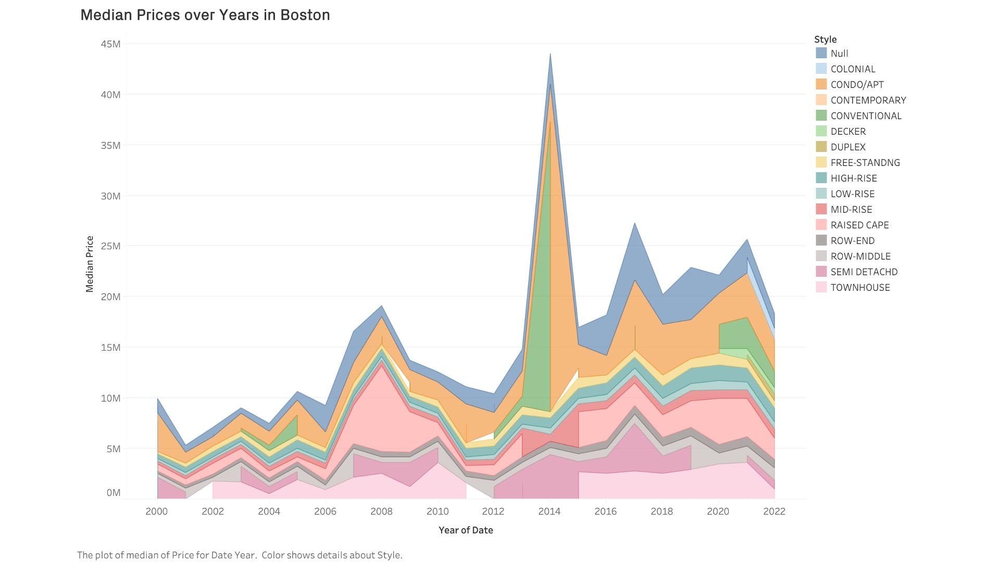
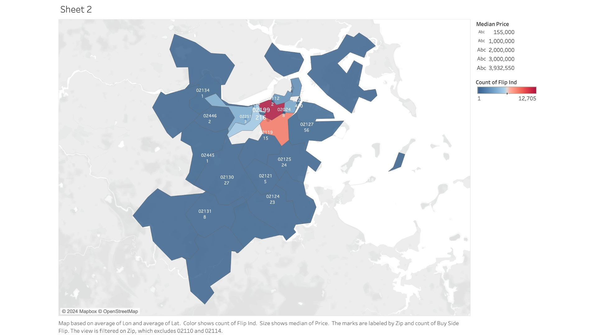
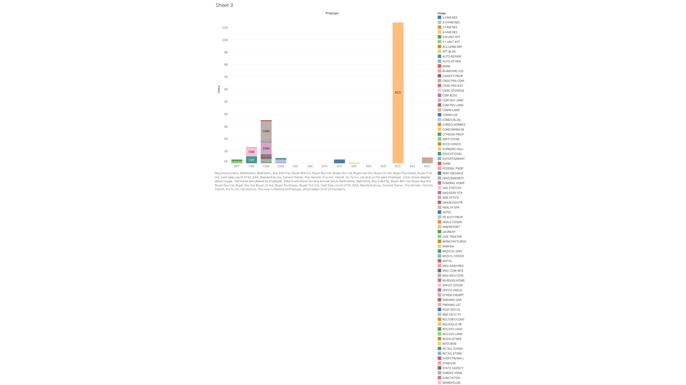

The graph shows the trend of median housing prices from 2000 onwards, which provides insight into how the housing market has evolved over the years. The color gradient that changes along the line could represent different phases or periods within the data, such as before and after a significant market event (like the financial crisis of 2008) or a change in policy that affected housing prices.
I wanted to try an alternative version, that showed the style of the units additionally. Even though it revealed more helpful information, I tend to feel sceptical adding too much information in one graph. Still learning.
This map elucidates the concentration of property flipping activities within Boston's diverse zip codes, serving as a lens to understand real estate investment behaviors. The varying shades across the neighborhoods highlight the intensity of flipping transactions, potentially indicating areas of rapid growth or transition. Zip codes with darker hues may signify hotspots for investment and could be areas undergoing gentrification or attracting speculative interest due to various factors such as proximity to upcoming infrastructure projects, commercial developments, or changes in urban policy. Conversely, areas with lighter shades may represent more stable neighborhoods with less transient real estate activity. This spatial distribution invites further investigation into the socioeconomic catalysts driving these patterns, such as disparities in income levels, access to credit, or targeted urban development initiatives. By dissecting these patterns, stakeholders, including policymakers, investors, and community advocates, can gain a nuanced understanding of the market forces at play and consider appropriate responses to ensure sustainable and equitable urban growth.
In the first bar chart, we observe a significant variation in the distribution of property types sold in Boston. The tallest bar, representing 'R1F' (single-family residences), suggests that these homes constitute a substantial portion of the market sales or hold the highest median sale price, depending on the metric used for the y-axis. This could indicate a strong demand for single-family homes, possibly driven by a preference for more spacious living or a reflection of the city's suburban expansion. Conversely, the shorter bars for 'APT' (apartments) and 'CNR' (condos) may point to a smaller volume of these properties changing hands or, alternatively, a lower median sale price, which might be due to higher inventory or less demand in certain areas.
In the second graph, where 'usage' is added as a color filter, the color gradients across each bar reveal the nuanced differences within each property type category. For instance, if darker shades represent higher median prices within the 'CNR' category, we can infer that luxury condominiums are commanding premium prices. This suggests that while condos as a whole might not dominate sales volume, there is a niche market for high-end condominiums that is quite active and lucrative. Meanwhile, other colors within the 'COM' (commercial) category might indicate a diverse range of commercial property transactions, from retail spaces to office buildings, each with its unique place in the market.